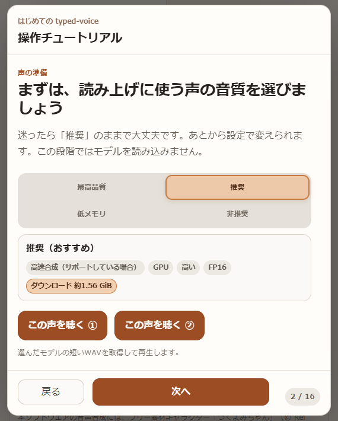
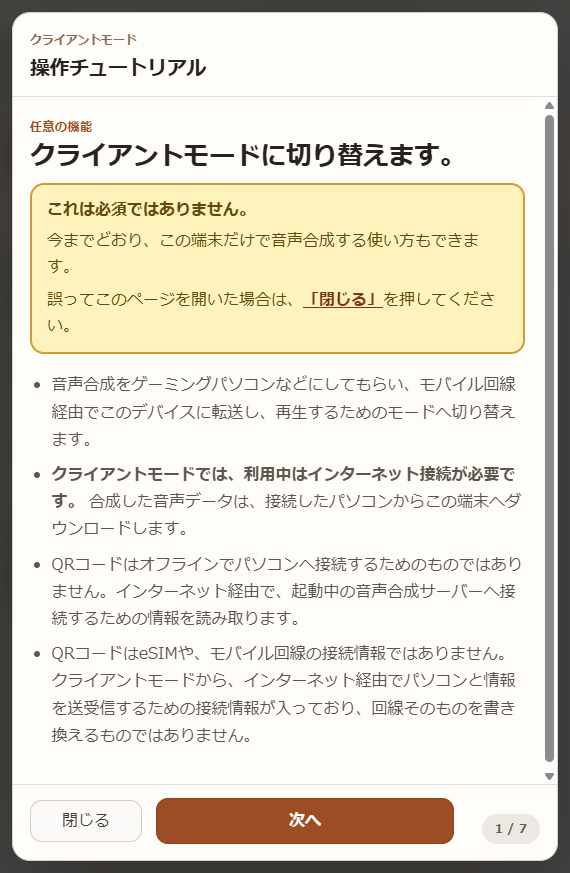
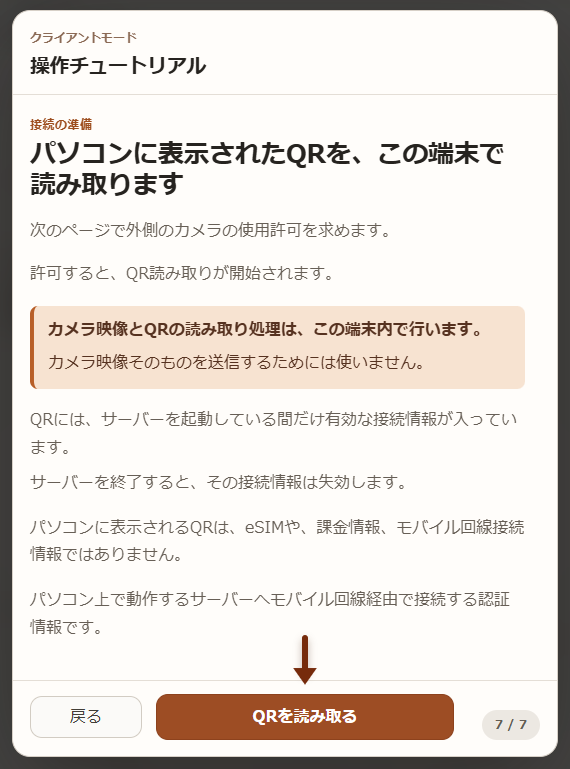
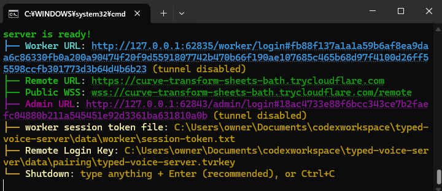
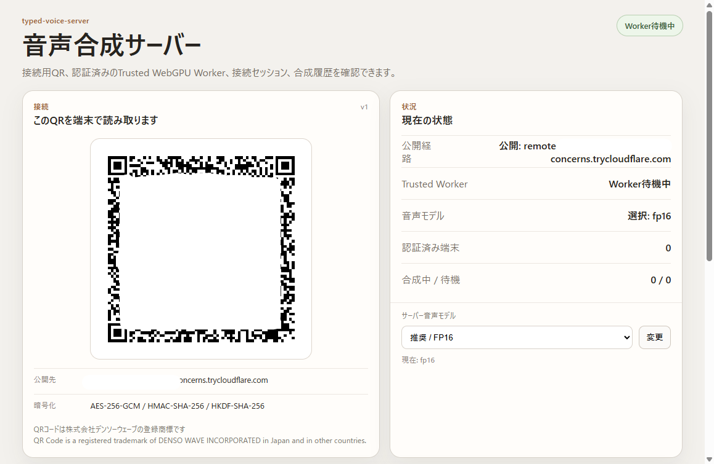
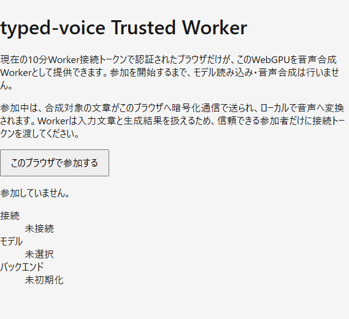
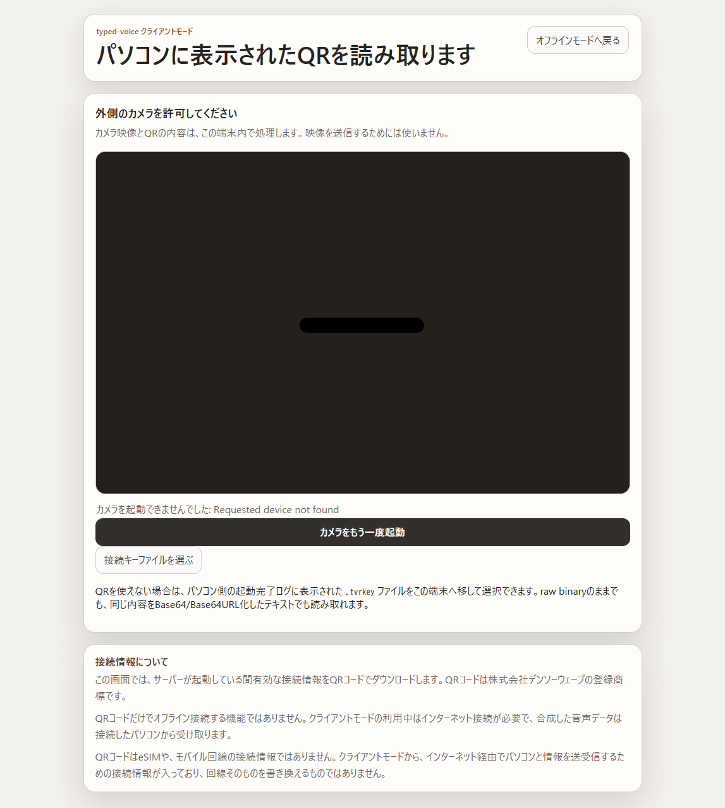
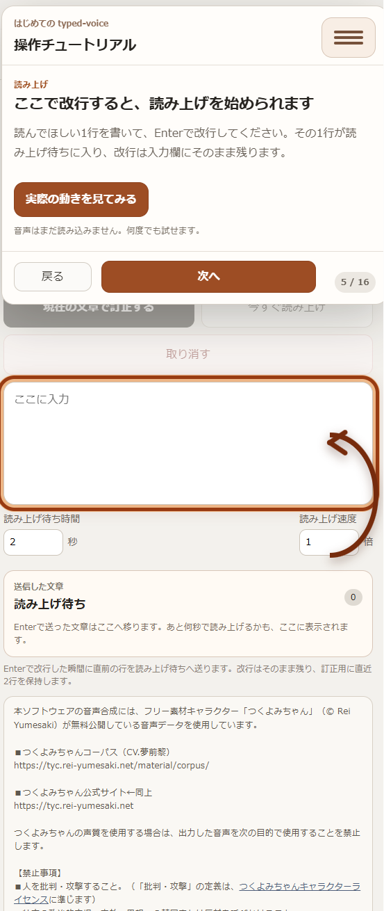

文章を、その場で読み上げ
入力した文章を音声へ変換。会話中に打ち込んだ文章を声として端末のスピーカーで届けたいときにも使えます。
Browser TTS
typed-voiceは、ブラウザから文章を音声に変換するためのツールです。必要なら自宅のPCへ音声合成を任せることもできます。
What you can do
基本はシンプルです。文章を書けば、その場で音声合成しその文章を音声として読み上げます。端末や使う場所に合わせて、動かし方を選べます。
入力した文章を音声へ変換。会話中に打ち込んだ文章を声として端末のスピーカーで届けたいときにも使えます。
専用アプリを入れるのではなく、タブレットでも対応するブラウザから同じ画面を利用できます。
音声モデルを端末へ準備しておけば、通信できない場所でも端末側で音声を生成できます。
モバイル側はクライアントとして使い、音声合成をモバイル回線経由でゲーミングPCへ任せるクライアントモードも用意しています。
typed-voiceは「モデルをどう動かすか」を先に考えるための画面ではありません。
はじめて開いたときの案内に沿って準備したら、普段は文章を入力して読み上げるだけです。
同じ画面の中に会話、読み上げ履歴、設定をまとめています。PC用とモバイル用で別々の操作を覚えるのではなく、端末が変わっても同じ使い方を目指しています。
Designed for everyday use
typed-voiceは、端末にインストールされている音声合成をそのまま呼び出すだけのツールではありません。
文章を入力して、その場で自分の声の代わりとして使用することを考えて制作されました。
文章入力、読み上げ履歴、設定を同じ画面にまとめ、通信できない場所ではオフラインで使い、端末に負荷をかけたくない場合はPCへ音声合成を任せられるようにしています。
それっぽい機能を並べることより、実際に使うときのことを考えて設計しています。
Choose your style
ブラウザでtyped-voiceを開いて、端末側で音声生成。
まず試したい人へ準備済みモデルを使い、通信なしで端末側で生成。
回線に頼りたくない人へ操作は別の端末、音声生成はPCへ任せる。
端末側の負荷を抑えたい人へassets/modelpicker.webp
Offline mode
はじめて使うときにモデルを選び、ダウンロードが終わるまで待ちます。
準備したモデルはブラウザ側に保存されるので、次回から同じモデルを毎回取り直す必要はありません。
準備後は通信を切った状態でもtyped-voiceを開き、文章を入力して端末内で音声を生成できます。サーバーへの接続は不要です。
assets/client.webp
Client mode
クライアントモードは必須ではありません。
今までどおり端末だけで音声合成する使い方もでき、PCの性能を使いたいときだけ切り替えられます。
assets/qr.webp
Server connection
PC側でtyped-voice-serverを起動したら、接続したい端末でクライアントモードを選び、PCに表示されたQRを読み取ります。
QRの読み取り処理は端末内で行われます。
接続後は、文章の入力や操作は手元の端末のまま、音声合成をPCへ任せられます。
QRに入る接続情報はサーバー起動中だけ有効で、サーバーを終了すると失効します。
typed-voice-server
typed-voice-serverは、1台のPCだけでなく、参加したTrusted Workerへ音声合成を割り振れるサーバープロジェクトです。
ブラウザをWorkerとして参加させ、必要に応じて1つのサーバーで音声合成ワーカーを複数個に増やせます。
assets/terminal.webp
Launch
サーバーを起動すると、ターミナルに認証済みURL表示がされます。
面倒なログインウィザードはありません。
assets/admin2.webp
Admin
接続用QR、Trusted Workerの状態、利用する音声モデルなどを1画面で確認できます。
音質切り替えも簡単です。
assets/worker.webp
Trusted Worker
Worker用の認証情報を含むURLをボランティアまたは自分で開き、そのパソコンを音声合成役のコンピューターとして参加させられます。
必要に応じて処理役を増やせます。
音声合成はブラウザ内で完結します。
For Windows
Windows向け配布では、必要な環境を準備したあとは展開先のServer.cmdから起動できます。
Remote用のQuick Tunnelも通常起動時に用意されます。
ホスティングフリー
回線費用、モバイル回線課金、電気代を除き、追加のホスティング使用料はかかりません。
typed-voice-serverは完全無料のCloud Quick Tunnels経由でホスティングされます。
自分でサーバーを立てる場合でも、面倒なポート解放やNat越え設定、ホスティング料金は必要ありません。
codexサンドボックス
typed-voice-serverは、デフォルトでCodexサンドボックスを境界として採用しています。
もしもリモートコード実行が起きても、攻撃者は境界を超えることはできませんが、絶対保証するものではありません。
Client mode
タブレットなど別の端末で画面を操作しながら、実際の音声合成はPCへ任せることもできます。
端末側へ大きなダウンロードや、負荷を掛けたくないときにも使えます。
typed-voice-serverを起動すると、別の端末を接続するための管理ページと、情報が用意されます。
QRコードを読み取れる端末なら、そのまま接続できます。
ファイルを渡せる環境では接続鍵ファイルも利用できます。
入力は接続した端末側。音声生成は接続先PC側。
生成された音声だけを受け取って再生します。
assets/QR_reader.webp
サーバー起動ごとに管理ページで生成されるQRコードは、接続情報がオールインワンです。
また、サーバーを終了するまで、1つのQRコードが使用されます。接続する端末で長いURLや鍵を打ち込む必要はありません。
通常起動ではRemote接続だけを外部へ公開し、管理画面やWorker参加口はローカルに残す構成です。
Getting started
はじめて開いたときは、画面の案内に沿って、音声の準備から基本的な使い方まで順番に進められます。

Q&A
違法な仕組みではありません。typed-voiceは、利用条件に沿って利用できるつくよみちゃんを採用し、音声合成AIをブラウザ内で動かすためのソフトウェアについても、各ライセンスや利用規約に沿う形で構成しています。必要なデータやプログラムは、公式に無料で提供されている配布元から取得します。
これらはライセンスや利用規約を遵守した正規の配布・利用であり、他人のデバイスを無断で使って音声合成する仕組みでもないため、違法な方法で提供しているものではありません。
また、音声合成の処理を利用者の端末内で行い、配布には無料で利用できるホスティングや配布サービスを活用しているため、運営側で大規模な音声合成サーバーを常時用意する必要がありません。そのため、広告収入に頼らず、無料で公開・提供できる構成になっています。
はい。完全に無料で、広告も完全にありません。今後有料化することや、自社アプリの広告が追加されることはありません。
はい。チュートリアルを完了すると、アプリケーションはブラウザにインストールされるため、オフラインや電波のない場所でも使用できるようになります。
ただし、遠隔のパソコンに音声合成をしてもらうクライアントモード（必須ではありません）では、モバイル回線経由で音声を転送するため、インターネット接続が必要です。
通常モードでは、入力した文章や会話内容を外部の音声合成サーバーへ送信しません。音声合成はあなたの端末内で、あなたのために行われます。
いいえ。プライバシーとオフライン利用を妨げないため、Google Analyticsはこのランディングページでのみ使用しており、移動先のtyped-voice本体では使用していません。
収集したアクセス情報は、このランディングページの改善に役立てさせていただきます。
いいえ。typed-voiceはTBSや「VIVANT」の公式アプリケーションではありません。また、これらの著作物や、声優様などの権利を侵害するためのアプリケーションでもありません。
いいえ。typed-voiceはつくよみちゃんプロジェクトの公式アプリケーションではなく、同プロジェクトから公式に推奨・推薦されているものでもありません。
一般的な翻訳アプリは、文章を別の言語へ翻訳することが主な目的で、読み上げは付随機能として提供されることが多くあります。
一方、typed-voiceは翻訳ではなく読み上げそのものに特化しており、デバイスのリソースを活用して、音声の品質を重視した合成を行います。
特定の属性を指す表現ではありません。typed-voiceは、発声することが難しい方や、人前などで声を出すことが難しく、文字を使った意思疎通を必要とする方が、自分の声の代わりとして使うことを考えて作っています。
仮想キーボードのポインタ位置を毎回移動し直す必要がなかったり、読み上げ後の文章を毎回手動で削除する必要がなかったり、読み上げ履歴を後から確認できたりと、実際に使い続ける場面を考えた設計にしています。
いいえ。このアプリケーションは、つくよみちゃんという音声合成AIを使用したアプリケーションです。
役者さんが作中で使用している声や、著作物を再現するものではありません。
いいえ。これはAI技術を端末内で使用した音声合成、TTSアプリケーションです。
つくよみちゃんの声優さんが、あなたのためにその場で読み上げてくれるわけではありません。
Chrome、Safariを推奨動作環境とし、外で使用する場合は、最新機種のタブレットでの使用を推奨します。
音声合成に必要なデータは、初回利用時にまとめてダウンロードします。最新のタブレットでも動作する推奨モデルのFP16では、1.56 GiBをダウンロードし、ブラウザデータの一部としてインストールします。
このデータはいつでもアンインストールでき、利用者が承認するまでダウンロードされません。
2GB以上の完全な空き容量が必要です。ブラウザへインストールすると、2GB程度のストレージを使用します。
はい。ただし、ブラウザ内で完結するようになっています。チュートリアルを進めると、ダウンロード容量を確認するダイアログが表示され、承認するまでアプリケーションの大部分のインストールは行われません。
いいえ。最新のブラウザ技術を使い、一度準備した音声モデルをブラウザ内に保存します。クライアントモードを使用しない場合、チュートリアル完了後は完全にオフラインでも動作し、その後に必要となる通信は更新の確認と、必要な更新データのダウンロードです。
チュートリアル中、必要なデータのダウンロード中、クライアントモードの利用中はインターネット接続が必要です。通常モードで使用し、チュートリアルを完了している場合は、オフラインでも使用できます。
はい。すべてのソースコードがオープンソース(完全にソースコードを開示すること)であり、GitHubというサイトで公開されています。
下記から完全なソースコードが利用可能です。
RabbitDaisuke/typed-voice
DaisukeDaisuke/typed-voice-server
RabbitDaisuke/blog
DaisukeDaisuke/tsukuyomichan-omnivoice-onnx
開発にはChatGPTを使用しており、生成されたコードは開発者が確認・監査しています。
インターネットに接続し、チュートリアルを最後まで完了し、チュートリアルのOKボタンを最後まで押してください。
チュートリアルを完全に完了するまで、アプリケーションの大部分はブラウザにインストールされず、起動できないため表示されます。
この画面は、アプリケーションを起動するための前準備をしています。そのまま数秒放置すると、自動的にアプリケーションが起動します。
クライアントモードを使用しない場合、合成はあなたのデバイスであなたのために直接行われます。
文字が外部に流出することはなく、あなたのデバイスで完結するため、合成のための時間がかかります。
このアプリケーションは、あなたのために端末内で音声合成を行います。
そのため、端末内の演算能力を通常時より多く使用するため、バッテリー消耗が早くなります。
部分的にはい。typed-voiceはすべて無料のホスティング、インフラで構築されており、アクセスが増えるとアクセスできなくなる可能性があります。
そのため、運営費がかからず、広告は完全にありません。ただし、すでに端末にダウンロードしたオフラインでの利用が、多数の利用によって妨害されることはありません。
クライアントモードは、typed-voiceを端末内で音声合成するのではなく、管理サーバーに接続し、そのサーバーに音声合成をお願いするモードです。
これは必須ではなく、性能の低いデバイスでもゲーミングパソコンとモバイル回線があれば、音声合成を利用可能にするためにあります。
はい。インターネット回線経由でサーバーへ音声合成を依頼するクライアントモードは、通常の利用では必須ではありません。
クライアントモードでは、プライバシーを保護するため通信内容を暗号化し、通信事業者から会話内容がそのまま分からないようにしています。
ただし、自分のゲーミングパソコン以外のサーバーへ接続する場合、そのサーバーの運営者に会話内容を見られる可能性や、送信した内容どおりの音声が返ってこない可能性があります。詳しくはクライアントモードのチュートリアルを参照してください。
部分的にはい。基本的には、自分のパソコンでtyped-voice-serverをホスティングし、自分のために使用することをおすすめします。
今後、第三者によるボランティアサーバーなどが公開された場合は、自分のパソコンがなくても利用できる可能性があります。ただし、そのような第三者のサーバーを利用した場合のプライバシーや、返される音声の正確性について、開発者は保証しません。
いいえ。あなたのデバイスにダウンロードする、音声合成AIつくよみちゃんを使用します。
いいえ。このアプリケーションは常につくよみちゃんという音声合成AIの声と品質を使用します。
いいえ。このアプリケーションは、入力された文字をそのまま読み上げることに特化したアプリケーションです。
そのため、入力された文字を翻訳して読み上げることはできません。
いいえ。日本語と英語のみ対応しています。
いいえ。つくよみちゃん以外の声に変更することはできません。このアプリケーションは、本当にこのアプリケーションが必要な人のために設計しており、作中っぽい機能を並べるアプリケーションではないため、声を変更することはできません。
いいえ。しゃべり方やイントネーションは合成のたびに変更されます。制御することはできません。
部分的にはい。ただし、つくよみちゃんの利用規約に違反する文章などを読み上げることは禁止されています。
typed-voiceは、利用時にインターネット接続を検知すると、更新の有無を確認するために約8KBの情報ファイルをダウンロードします。
このファイルとブラウザにインストールされているバージョンを比較・確認し、更新が必要と判断した場合は、一部のチュートリアル進行中を除いて、すぐに更新ダイアログを表示します。更新が必要な場合は、更新を完了するまで通常の利用を続けることはできません。
更新ウィザードによって、オフラインでの利用が妨げられることはありません。
typed-voiceは、お使いのブラウザにインストールされているtyped-voiceのバージョンが、現在配布されている最新バージョンより古いことを検出すると、更新ウィザードが表示されることがあります。
ダイアログは複数回表示されることがありますが、更新手順の一部であるため異常ではありません。「修復が必要です」と表示されることがありますが、これも更新手順の一部であるため、承認ボタンを押してください。
上部のツールバーから設定を開き、設定内の「高度」という文字を押し、「アプリケーションをアンインストールする」をクリックして免責事項に同意すると、アプリケーションをブラウザからアンインストールできます。
Start typing, start speaking.
まずはブラウザから。必要になったら、オフラインやクライアントモードへ。